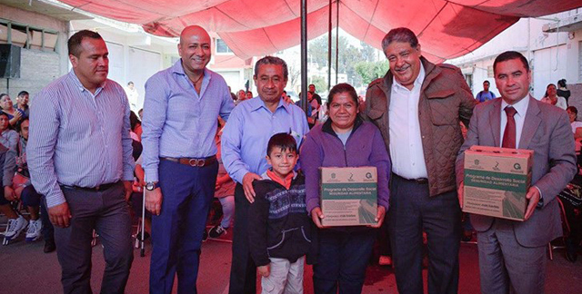
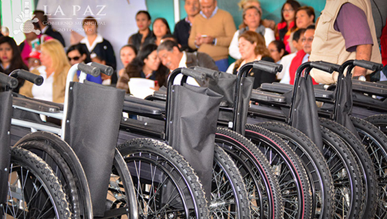

Entrega del programa de seguridad alimentaria
 La Paz, Estado de México 7 de Julio del 2016
La Paz, México: .- El contar con la seguridad alimentaria es parte fundamental para el buen desarrollo de las familias de la paz. El Gobierno del Estado de México en coordinación con el Gobierno Municipal se entregan más de 300 de canastas alimentarias a los habitantes del Municipio de la Paz, en esta ocasión en la colonia Valle de los pinos.
El Edil de la Paz manifestó la gran importancia que tienen este tipo de programas, desafortunadamente el rezago social rebasa cualquier presupuesto, sin embargo el Gobierno Estatal y Municipal en conjunto contribuyan para que las familias de la Paz tengan una mejor alimentación.
Mega jornada de salud en La Paz
 La Paz, Estado de México 1 de Julio del 2016
La Paz, México: .- El H. Ayuntamiento de La Paz junto con la Secretaria de Salud de Estado de México, hicieron entrega de apoyos para los ciudadanos de este Municipio, entre ellos sillas de ruedas, andaderas, bastones entre otros. Los asistentes también pudieron aprovechar los diferentes servicios que se brindaron en esta gran jornada de salud; pruebas de VIH, glucosa, información sobre métodos anticonceptivos, vacunas, consultas médicas, Mastografías entre otros servicios fueron los que se brindaron.
El Edil de La Paz manifestó la importancia de mejorar las condiciones de salud en los habitantes, resaltando la importancia de prevenir enfermedades futuras, por lo cual seguirá tocando las puertas del Gobierno Estatal y Federal, para realizar las gestiones pertinentes para obtener recursos de ambos ámbitos de gobierno. Por otra parte informo que se están realizando los trámites pertinentes para que el Hospital Materno Infantil sea de Población abierta.